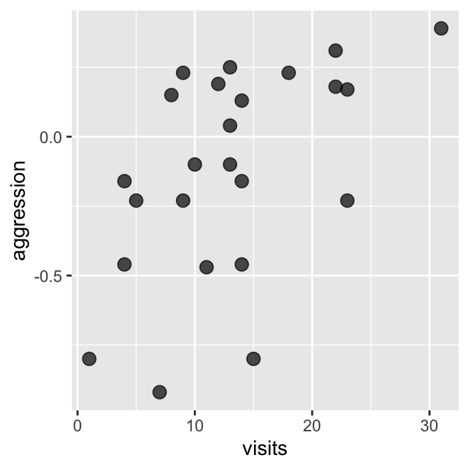
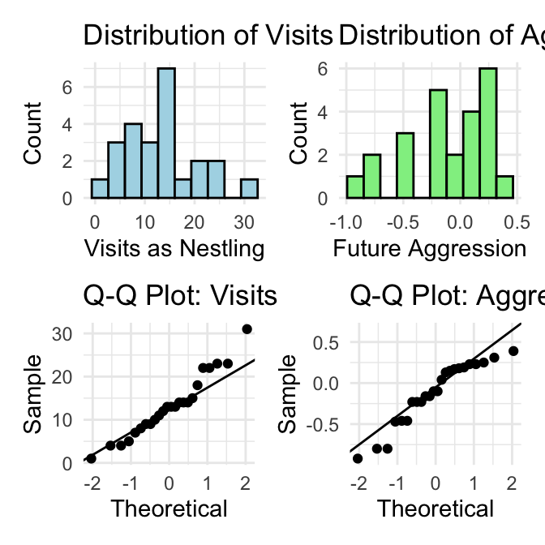
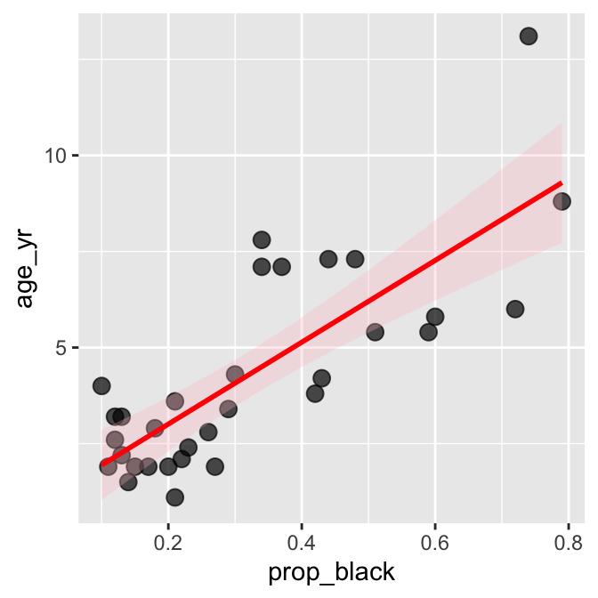
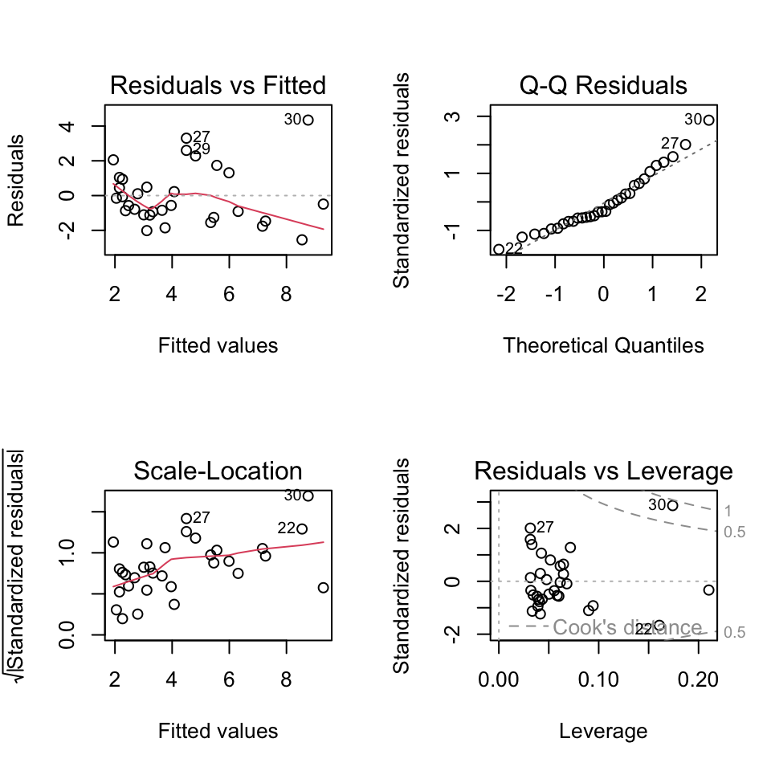
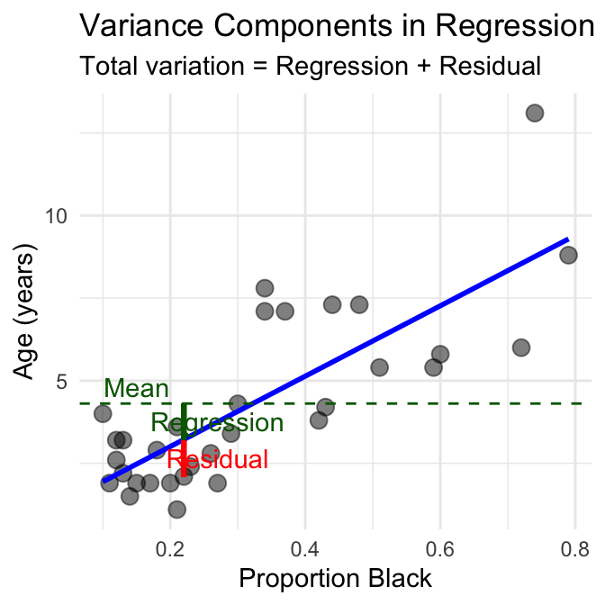
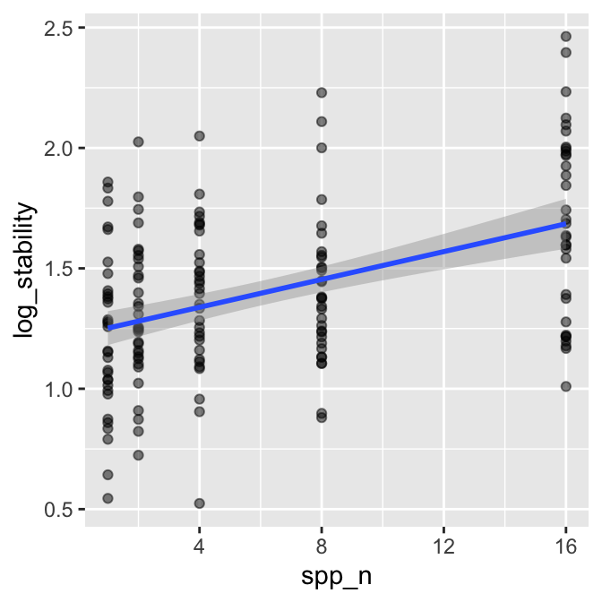

Correlation and regression
This document demonstrates key concepts in correlation and regression analysis using ecological examples, focusing on:
We’ll work with real ecological datasets to practice these concepts.
# Set seed for reproducible results
set.seed(123)
# Create the datasets from the lecture
# Lion data from Example 17.1
l_df <- tibble(
prop_black = c(0.21, 0.14, 0.11, 0.13, 0.12, 0.13, 0.12, 0.18, 0.23, 0.22,
0.20, 0.17, 0.15, 0.27, 0.26, 0.21, 0.30, 0.42, 0.43, 0.59,
0.60, 0.72, 0.29, 0.10, 0.48, 0.44, 0.34, 0.37, 0.34, 0.74, 0.79, 0.51),
age_yr = c(1.1, 1.5, 1.9, 2.2, 2.6, 3.2, 3.2, 2.9, 2.4, 2.1,
1.9, 1.9, 1.9, 1.9, 2.8, 3.6, 4.3, 3.8, 4.2, 5.4,
5.8, 6.0, 3.4, 4.0, 7.3, 7.3, 7.8, 7.1, 7.1, 13.1, 8.8, 5.4)
)
# Booby data from Example 16.1
b_df <- tibble(
visits = c(1, 7, 15, 4, 11, 14, 23, 14, 9, 5, 4, 10,
13, 13, 14, 12, 13, 9, 8, 18, 22, 22, 23, 31),
aggression = c(-0.80, -0.92, -0.80, -0.46, -0.47, -0.46, -0.23, -0.16,
-0.23, -0.23, -0.16, -0.10, -0.10, 0.04, 0.13, 0.19,
0.25, 0.23, 0.15, 0.23, 0.31, 0.18, 0.17, 0.39)
)
# Prairie stability data from Example 17.3
p_df <- tibble(
spp_n = rep(c(1, 2, 4, 8, 16), times = c(32, 32, 32, 32, 33)),
log_stability = 1.20 + 0.033 * spp_n + rnorm(161, 0, 0.35)
)Package Overview
Correlation Analysis: Data Types and Assumptions
Data Types Required:
Assumptions for Pearson Correlation:
Let’s start with the Nazca booby data to explore correlation:
Pearson's product-moment correlation
data: b_df$visits and b_df$aggression
t = 2.9603, df = 22, p-value = 0.007229
alternative hypothesis: true correlation is not equal to 0
95 percent confidence interval:
0.1660840 0.7710999
sample estimates:
cor
0.5337225 [1] 0.5337225[1] 0.5337225[1] 0.2848597
Activity 1: Interpret the Correlation
Based on the output above, answer these questions:
Shapiro-Wilk normality test
data: b_df$visits
W = 0.95783, p-value = 0.3965
Shapiro-Wilk normality test
data: b_df$aggression
W = 0.91575, p-value = 0.04709# Create diagnostic plots
p1 <- ggplot(b_df, aes(x = visits)) +
geom_histogram(bins = 10, fill = "lightblue", color = "black") +
labs(title = "Distribution of Visits", x = "Visits as Nestling", y = "Count") +
theme_minimal()
p2 <- ggplot(b_df, aes(x = aggression)) +
geom_histogram(bins = 10, fill = "lightgreen", color = "black") +
labs(title = "Distribution of Aggression", x = "Future Aggression", y = "Count") +
theme_minimal()
p3 <- ggplot(b_df, aes(sample = visits)) +
stat_qq() + stat_qq_line() +
labs(title = "Q-Q Plot: Visits", x = "Theoretical", y = "Sample") +
theme_minimal()
p4 <- ggplot(b_df, aes(sample = aggression)) +
stat_qq() + stat_qq_line() +
labs(title = "Q-Q Plot: Aggression", x = "Theoretical", y = "Sample") +
theme_minimal()
# Combine plots
(p1 + p2) / (p3 + p4)
When Assumptions Are Violated
If normality assumptions are violated (p < 0.05 in Shapiro-Wilk test), consider:
Let’s try Spearman’s correlation:
Warning in cor.test.default(b_df$visits, b_df$aggression, method = "spearman"):
cannot compute exact p-value with ties
Spearman's rank correlation rho
data: b_df$visits and b_df$aggression
S = 1213.5, p-value = 0.01976
alternative hypothesis: true rho is not equal to 0
sample estimates:
rho
0.472374 Now let’s move from correlation to regression using the lion nose data.
Linear Regression: Data Types and Assumptions
Data Types Required:
Assumptions for Linear Regression:
Linearity: Relationship between X and Y is linear
Independence: Observations are independent
Homoscedasticity: Constant variance of residuals
Normality: Residuals are normally distributed
No influential outliers
Call:
lm(formula = age_yr ~ prop_black, data = l_df)
Residuals:
Min 1Q Median 3Q Max
-2.5449 -1.1117 -0.5285 0.9635 4.3421
Coefficients:
Estimate Std. Error t value Pr(>|t|)
(Intercept) 0.8790 0.5688 1.545 0.133
prop_black 10.6471 1.5095 7.053 7.68e-08 ***
---
Signif. codes: 0 '***' 0.001 '**' 0.01 '*' 0.05 '.' 0.1 ' ' 1
Residual standard error: 1.669 on 30 degrees of freedom
Multiple R-squared: 0.6238, Adjusted R-squared: 0.6113
F-statistic: 49.75 on 1 and 30 DF, p-value: 7.677e-08Activity 2: Interpret the Regression Output
From the regression output above:
`geom_smooth()` using formula = 'y ~ x'
Confidence vs. Prediction Intervals

Understanding Regression Diagnostic Plots
Shapiro-Wilk normality test
data: residuals(lion_model)
W = 0.93879, p-value = 0.0692Loading required package: zoo
Attaching package: 'zoo'The following objects are masked from 'package:base':
as.Date, as.Date.numeric
studentized Breusch-Pagan test
data: lion_model
BP = 6.8946, df = 1, p-value = 0.008646Activity 3: Assess Assumption Violations
Based on the diagnostic plots and tests:
Analysis of Variance Table
Response: age_yr
Df Sum Sq Mean Sq F value Pr(>F)
prop_black 1 138.544 138.544 49.75 7.677e-08 ***
Residuals 30 83.543 2.785
---
Signif. codes: 0 '***' 0.001 '**' 0.01 '*' 0.05 '.' 0.1 ' ' 1[1] "Manual calculation of sums of squares:"[1] "SS Total: 222.09"[1] "SS Regression: 138.54"[1] "SS Residual: 83.54"[1] "SS Regression + SS Residual: 222.09"# Create a plot showing variance components
# Get predicted values
l_df$predicted <- predict(lion_model)
mean_age <- mean(l_df$age_yr)
# Select one point to illustrate
example_point <- 10
# Create the visualization
variance_plot <- ggplot(l_df, aes(x = prop_black, y = age_yr)) +
geom_point(size = 3, alpha = 0.5) +
geom_smooth(method = "lm", se = FALSE, color = "blue", size = 1) +
geom_hline(yintercept = mean_age, linetype = "dashed", color = "darkgreen") +
# Add lines for one example point
geom_segment(aes(x = prop_black[example_point],
y = age_yr[example_point],
xend = prop_black[example_point],
yend = predicted[example_point]),
color = "red", size = 1) +
geom_segment(aes(x = prop_black[example_point],
y = predicted[example_point],
xend = prop_black[example_point],
yend = mean_age),
color = "darkgreen", size = 1) +
# Add labels
annotate("text", x = 0.15, y = mean_age + 0.5,
label = "Mean", color = "darkgreen") +
annotate("text", x = l_df$prop_black[example_point] + 0.05,
y = (l_df$age_yr[example_point] + l_df$predicted[example_point])/2,
label = "Residual", color = "red") +
annotate("text", x = l_df$prop_black[example_point] + 0.05,
y = (l_df$predicted[example_point] + mean_age)/2,
label = "Regression", color = "darkgreen") +
labs(title = "Variance Components in Regression",
subtitle = "Total variation = Regression + Residual",
x = "Proportion Black", y = "Age (years)") +
theme_minimal()
variance_plot
Let’s practice regression with the prairie biodiversity data:
Call:
lm(formula = log_stability ~ spp_n, data = p_df)
Residuals:
Min 1Q Median 3Q Max
-0.8146 -0.2165 -0.0094 0.2228 0.7780
Coefficients:
Estimate Std. Error t value Pr(>|t|)
(Intercept) 1.222902 0.039094 31.281 < 2e-16 ***
spp_n 0.028881 0.004694 6.153 5.94e-09 ***
---
Signif. codes: 0 '***' 0.001 '**' 0.01 '*' 0.05 '.' 0.1 ' ' 1
Residual standard error: 0.3271 on 159 degrees of freedom
Multiple R-squared: 0.1923, Adjusted R-squared: 0.1872
F-statistic: 37.86 on 1 and 159 DF, p-value: 5.94e-09`geom_smooth()` using formula = 'y ~ x'
Activity 4: Compare the Two Regressions
Compare the lion and prairie regression models:
What We Learned Today
Common Mistakes to Avoid